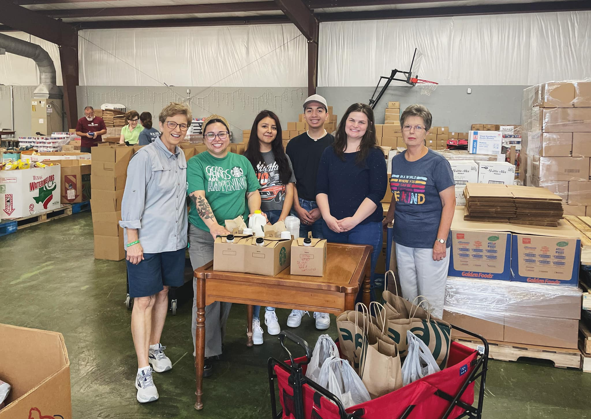

Our mission is:
Our mission is:
To demonstrate Christian love
by providing food to people in need

~ Events ~
Tuesdays
Every other Tuesday food is delivered to residents of Silver Lakes and The Oaks who are unable to pick up food on Wednesdays.
Wednesdays
Every Wednesday from 9 AM to 12 PM at LifeBridge Community Church, food is distributed to those in need.
Saturdays
A produce truck is at LifeBridge Community Church the first Saturday of each month. Distribution of the produce is from 9 AM - 11 AM.
~ History ~
The pantry has been operating in the Sealy area since 1987. It was organized by 6 women who looked around the community and saw needs for food assistance – especially school-aged children, older people with limited income, people with disabilities and others unable to get jobs. The pantry’s purpose was to serve these people. They started with $60, the help of two local grocery stores and a borrowed garage.
1987
1997
In 1997, we moved into our own building on Ward Street. We helped over 1200 families that year, which was a 15% increase over the previous year. The number of people requesting and receiving assistance from the pantry has steadily increased each year since then. Eventually, we had to start thinking about how we might enlarge our building to help with our crowded conditions.
Then, 2020 and the Covid pandemic happened. Like so many others, food pantry operations were severely affected. We could not operate out of our Ward Street building. Our quarters were too close to be safe from Covid. We had to begin a drive-through operation. The Houston Food Bank process also changed to mandate food orders only in full pallet quantities instead of cases. In fact, there was a 5-pallet minimum. There was no space to store whole pallets of food at the Ward Street location.
2020
March 2020
Our problem was solved in March 2020, when we moved to Lifebridge community church. That church facility is uniquely compatible with our needs. Thanks to the church’s generosity, we are still there, two years later.